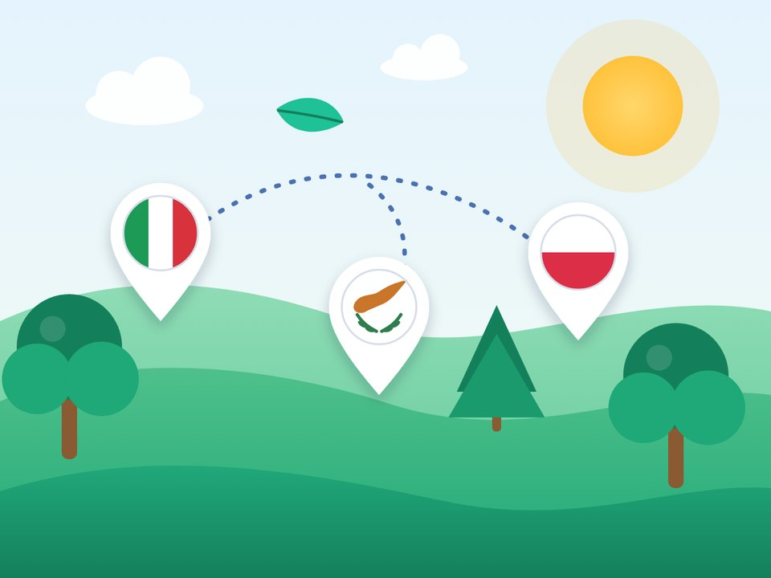

La nostra scuola è accreditata Erasmus+: mobilità europee, formazione e cooperazione con scuole di altri Paesi, per una scuola più inclusiva e aperta al mondo.
La Scuola Santa Maria del Paradiso di Viterbo ha ottenuto l’accreditamento Erasmus+ nel settore Istruzione scolastica (2025-1-IT02-KA120-SCH-000386351), avviando un percorso strutturato di internazionalizzazione finalizzato al miglioramento della qualità dell’offerta educativa e al rafforzamento della dimensione europea dell’Istituto.
La prevenzione del bullismo, il dialogo interculturale e la partecipazione attiva di studenti e docenti.
L’educazione all’uso critico, consapevole e responsabile delle tecnologie.
L’internazionalizzazione e l’integrazione della sostenibilità nei percorsi educativi.
Attraverso le mobilità europee, la formazione del personale e la cooperazione con istituzioni scolastiche di altri Paesi, l’Istituto intende consolidare pratiche educative inclusive e partecipative, favorire il confronto interculturale e promuovere negli alunni il senso di responsabilità verso la comunità, l’ambiente e la società europea.
I risultati attesi comprendono il miglioramento del clima scolastico, una maggiore partecipazione alla vita della scuola e l’integrazione stabile di esperienze internazionali e percorsi di educazione alla cittadinanza nella programmazione didattica.
Nature-based Activities and Teaching for Unforgettable Resilient Experiences
N.A.T.U.R.E. è un progetto Erasmus+ KA210-SCH (2025-1-IT02-KA210-SCH-000349729), coordinato dalla Scuola Santa Maria del Paradiso di Viterbo, in collaborazione con partner di Cipro e Polonia. Il progetto, della durata di 20 mesi, promuove l’apprendimento attraverso il contatto diretto con la natura, sperimentando metodologie didattiche che favoriscono la resilienza, l’autonomia, la collaborazione e la consapevolezza ambientale dei bambini.

Dal 14 al 18 ottobre 2026, la nostra scuola ha partecipato a una mobilità a Cipro con 2 insegnanti, 3 bambini e 3 genitori.
L’incontro ha permesso ai docenti dei tre Paesi di sperimentare insieme le metodologie educative analizzate e di confrontarsi sulla loro applicazione nei diversi contesti scolastici.
I bambini hanno potuto esplorare nuovi ambienti naturali, partecipare ad attività condivise con i coetanei ciprioti e polacchi e sviluppare competenze sociali, autonomia e capacità di collaborazione.
La presenza dei genitori ha permesso di coinvolgere direttamente le famiglie nell’esperienza educativa, offrendo loro l’opportunità di conoscere le metodologie proposte e di comprenderne il valore per la crescita e l’apprendimento dei figli.